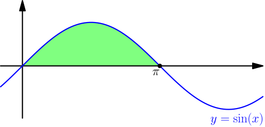
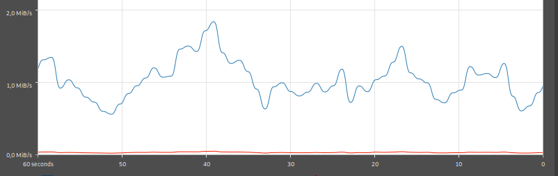
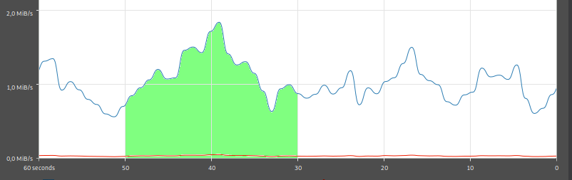
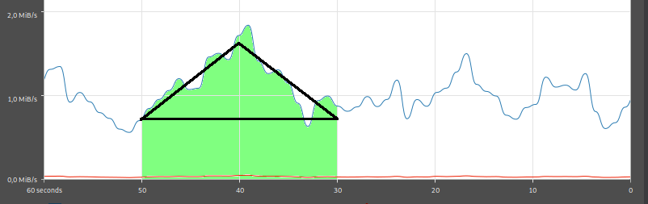

Fundamental Theorem of Calculus, Part 2¶
Let $$ I(t) = \int_1^t x^2\ dx. $$ (I'm using $t$ instead of $b$ because I want to use the letter $b$ for a different thing later.) Because $x^2$ is continuous, by part 1 of the fundamental theorem of calculus, we have $I'(t) = t^2$ for all numbers $t$. On the other hand, we also have $$ \frac{d}{dt} \left( \frac{1}{3} t^3 \right) = \frac{1}{3} \frac{d}{dt} t^3 = \frac{1}{3} 3t^2 = t^2, $$ so $t^3$ and $I$ have the same derivative. With derivative of difference, we get $$ \frac{d}{dt} \left( I(t) - \frac{1}{3}t^3 \right) = I'(t) - \frac{1}{3}3t^2 = t^2 - t^2 = 0. $$
What if derivative is zero for all inputs?¶
Suppose that $g$ is a function so that $g'(x) = 0$ for all numbers $x$. Let's think of $x$ as time and $g(x)$ as the location of an object at time $x$. Then $g'(x)$ is the speed of the object, and because the speed is zero, the object is not moving at all. In other words, $$ g(x) = \text{constant}, $$ so no matter which number you plug in for $x$, i.e. what time it is, the location $g(x)$ will always be the same.
This works in general, even if the function doesn't represent the location of an object. If this was a math course in a university, then I would prove this without relying on physics.
If $g'(x)=0$ for all numbers $x$, then $g(x)$ is a constant.
We already knew that the derivative of a constant is zero, but this result says that it's the only way how the the derivative can be zero for all inputs.
Putting it all together¶
Let $I(t)=\int_1^t x^2\ dx$ like we had before. Because $$ \frac{d}{dt} \left( I(t)-\frac{1}{3}t^3 \right) = 0, $$ the previous result tells that $I(t) - \frac{1}{3}t^3$ must be a constant. By calling that constant $C$, we get $$ I(t) - \frac{1}{3}t^3 = C, $$ which leads to $$ I(t) = \frac{1}{3}t^3 + C. $$ Because $I(1) = \int_1^1 x^2\ dx = 0$ (TODO), we can plug in $t=1$ to get $$ 0 = \frac{1}{3}1^3 + C, $$ which gives $C=-\frac{1}{3}$. Now we have $$ I(t) = \frac{1}{3}t^3 - \frac{1}{3}, $$ so $$ \int_1^2 x^2\ dx = I(2) = \frac{1}{3} 2^3 - \frac{1}{3} = \frac{7}{3}. $$ We have calculated an integral without having to calculate upper and lower sums.
Let's generalize this awesomeness. Suppose that $f$ is continuous on $[a,b]$, and suppose that we know another function $F$ so that $F'(x) = f(x)$. Let $$ I(t) = \int_a^t f(x)\ dx. $$ With part 1 of the fundamental theorem of calculus, we get $I'(t) = f(t)$, so $$ \frac{d}{dt} (I(t) - F(t)) = I'(t) - F'(t) = f(t)-f(t) = 0. $$ Because of this, there is a constant $C$ such that $I(t)-F(t)=C$, which leads to $I(t)=F(t)+C$. Because $$ I(a)=\int_a^a f(x)\ dx = 0, $$ but also $$ I(a)=F(a)+C, $$ we must have $F(a)+C=0$ and $C=-F(a)$. Now we get $$ \int_a^b f(x)\ dx = I(b) = F(b)+C = F(b)-F(a). $$
If $f$ is continuous on $[a,b]$ and $F'(x)=f(x)$, then $$ \int_a^b f(x)\ dx = F(b) - F(a). $$
This is known as part 2 of the fundamental theorem of calculus.
Example: Area under sine wave¶
Let's calculate how much area there is below one of the "bumps" of $y=\sin(x)$.

We can find this area with the integral $$ \int_0^\pi \sin(x)\ dx. $$ Because $$ \frac{d}{dx} \cos(x) = -\sin(x), $$ we have $$ \frac{d}{dx} (-\cos(x)) = (-1)\frac{d}{dx} \cos(x) = -(-\sin(x)) = \sin(x). $$ By letting $F(x) = -\cos(x)$, we get $$ \begin{align*} \int_0^\pi \sin(x)\ dx &= F(\pi) - F(0) \\ &= -\cos(\pi) - (-\cos(0)) \\ &= -(-1)-(-1)=2. \end{align*} $$
Example: Download speed¶
Here's a screenshot of my network usage graph while downloading a big file.

On the $x$ axis, there's time as seconds. The right edge of the graph represents "now", and the left edge is 60 seconds ago. The $y$ axis represents mebibytes per second, where 1 mebibyte means $2^{20} = 1048576$ bytes. For example, the peak of the graph at 40 seconds ago was when the download speed was fastest, about 1.8 mebibytes per second. (Ignore the red line. It's the upload speed.)
Because download speed is derivative of downloaded data, part 2 of fundamental theorem of calculus says that $$ \begin{align} &~~~~ \int_a^b \text{download speed}\ dx \\ &= (\text{downloaded data at time $b$}) - (\text{downloaded data at time $a$}) \\ &= \text{how much data was downloaded between $a$ and $b$}. \end{align} $$ For example, this area tells how much data was downloaded between "50 seconds ago" and "30 seconds ago":

Calculating the area precisely is difficult, but it's easy to make a rough approximation with straight lines:

The top and bottom of the triangle seem to be at about 1.6 MiB/sec and 0.7 MiB/sec. The area of the triangle is approximately $$ \frac{20~\text{sec} \cdot (1.6~\text{MiB/sec} - 0.7~\text{MiB/sec})}{2} = 9~\text{MiB}, $$ where the seconds canceled nicely as expected. There's also a rectangle below the triangle, and its area is $$ 20~\text{sec} \cdot 0.7~\text{MiB/sec} = 14~\text{MiB}, $$ so the amount of downloaded data is approximately $$ 9~\text{MiB}+14~\text{MiB}=23~\text{MiB}. $$ This is one reason why integrals are interesting: they allow representing real-world things as areas.
This also works when $y$ axis is the speed of a moving object instead of a download speed. For example, if you graph the speed of a moving car, with kilometres per hour on the $y$ axis, then the area under the graph correspond to total distance travelled by the car. At a high level, an integral combines changes that build up over time, represented by the derivative, and we get the total change as a result.